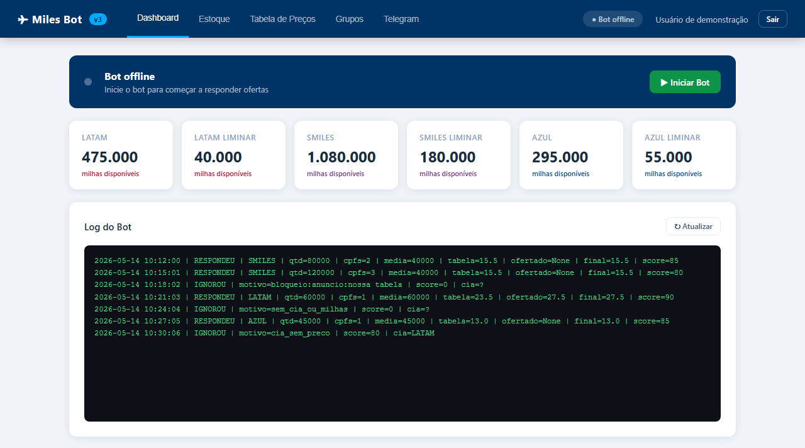
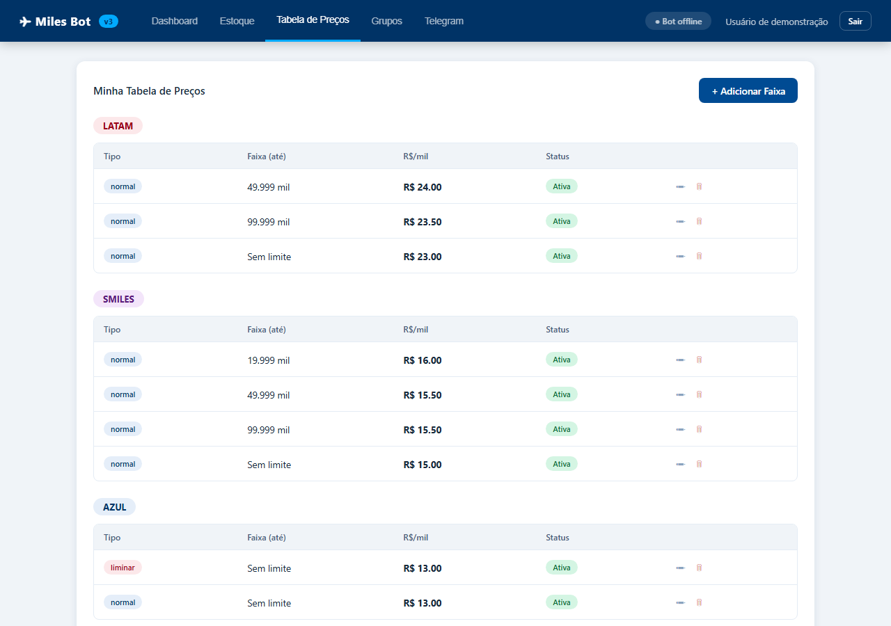
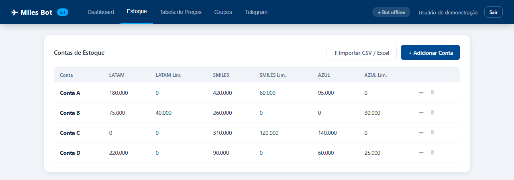

- Período
- Março de 2025 a junho de 2026
- Meu papel
- Desenvolvi o robô e o painel web: leitura das mensagens, regras de pontuação, tabela de preços, estoque e controle do robô
- Status
- Usado na operação da KIP Viagens; sem demonstração pública no ar
Problema
As ofertas de milhas chegam a toda hora em grupos do Telegram, misturadas com anúncios de concorrentes e mensagens institucionais. Responder à mão significava perder as boas ofertas para quem respondia primeiro e calcular o preço de cabeça a cada mensagem.
O que eu fiz
- Escrevi a leitura das mensagens: identifica a companhia (Latam, Smiles ou Azul), a quantidade de milhas, o número de CPFs, o preço pedido e se há liminar.
- Criei uma pontuação de 0 a 100 por regras: soma pontos para intenção de venda, companhia, milhas, CPFs e preço; tira pontos de bloqueios, anúncios e mensagens institucionais.
- Defini três modos de operação (conservador, equilibrado e agressivo), cada um com uma pontuação mínima para responder.
- Calculei o preço pela tabela de cada companhia, por faixa de milhas por CPF, com faixas que podem ser ligadas e desligadas.
- Construí um painel web em Flask com SQLite para gerenciar estoque, tabelas de preço por cliente e grupo, configuração do Telegram, início e parada do robô e registro das decisões.
Como funciona
- Mensagem no grupoex.: "Vendo 80k Smiles, 2 CPFs"
- Leituracompanhia Smiles, 80.000 milhas, 2 CPFs, média de 40.000 milhas por CPF
- Pontuação+30 intenção de venda ("vendo"), +20 companhia, +20 milhas, +15 CPF explícito = 85 pontos
- Decisão85 passa da pontuação mínima do modo conservador (80), então o robô segue
- Preçona tabela de preços, a faixa de até 49.999 milhas por CPF da Smiles define o valor do milheiro (R$ 15,50 na tabela fictícia das telas abaixo), e o robô responde com esse valor
O painel de gestão
Telas do painel web rodando com dados fictícios. O registro de decisões não foi inventado: é a saída da própria função do robô aplicada a mensagens de exemplo.
Robô e decisões
Liga e desliga o robô, mostra o estoque de milhas por companhia e registra cada decisão com o motivo.

Preços e estoque
O dono do negócio ajusta as regras sem mexer no código.


Capturas feitas em 06/11/2026 numa cópia local do sistema, com contas, preços e grupos fictícios. Os dados reais da KIP Viagens não aparecem. Toque numa imagem para ver em tamanho original.
Resultado
- As ofertas passaram a ser respondidas automaticamente, com o preço da tabela, sem cálculo manual a cada mensagem.
- Anúncios de concorrentes e mensagens institucionais deixaram de receber resposta, graças às penalidades da pontuação.
- Cada decisão fica registrada com a pontuação e o motivo (respondeu, baixa confiança, bloqueio, companhia sem preço), o que permite ajustar as regras.
Decisão técnica
Regras com pontuação em vez de um modelo de aprendizado de máquina
Não havia uma base de mensagens rotuladas para treinar um modelo, e o dono do negócio precisava entender e ajustar por que o robô respondeu ou não. A pontuação por regras é transparente: cada decisão vem com a lista de pontos somados e subtraídos. A pontuação não é uma probabilidade estatística; é um limiar de confiança definido pelo modo de operação.
Trecho do código
if tem_intencao:
score += 30 # "vendo", "compro"...
if tem_cia:
score += 20 # Latam, Smiles ou Azul
if tem_mil:
score += 20 # 1.000 milhas ou mais
# penalidades
if bloqueio := tem_bloqueio(texto, config):
score -= 100
if any(x in t for x in ["compramos", "nossa tabela", "pagamos mais"]):
score -= 80 # parece anúncio de concorrente
return max(0, min(100, score)), razoesLimitações
- As regras dependem de padrões de escrita; ofertas escritas de forma muito diferente podem receber pontuação baixa e ficar sem resposta.
- Os preços e faixas precisam ser atualizados à mão no painel quando o mercado muda.
Tecnologias
- Python
- Telethon
- Flask
- SQLite
- Expressões regulares
- Telegram
Evidências
Código-fonte do robô e do painel web (versão 3).
As telas deste case vêm de uma cópia local do sistema com dados fictícios; contas, clientes e preços reais da empresa não são publicados.